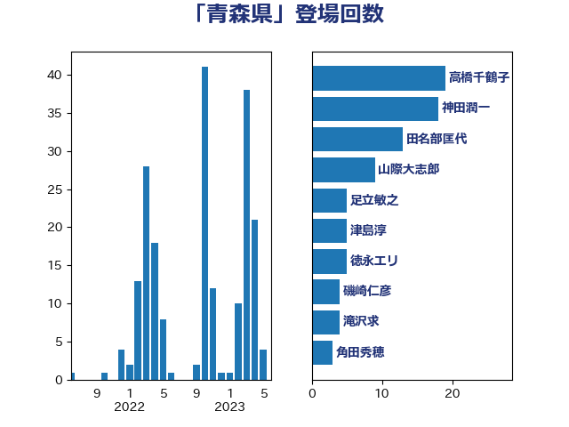

単語「青森県」

| 高橋千鶴子 | 日本共産党 | 19 回 |
| 神田潤一 | 自由民主党 | 18 回 |
| 田名部匡代 | 立憲民主党 | 13 回 |
| 山際大志郎 | 自由民主党 | 9 回 |
| 足立敏之 | 自由民主党 | 5 回 |
| 津島淳 | 自由民主党 | 5 回 |
| 徳永エリ | 立憲民主党 | 5 回 |
| 磯崎仁彦 | 自由民主党 | 4 回 |
| 滝沢求 | 自由民主党 | 4 回 |
| 角田秀穂 | 公明党 | 3 回 |
| 滝波宏文 | 自由民主党 | 3 回 |
| 岩本剛人 | 自由民主党 | 3 回 |
| 野間健 | 立憲民主党 | 2 回 |
| 野田聖子 | 自由民主党 | 2 回 |
| 盛山正仁 | 自由民主党 | 2 回 |
| 浜田靖一 | 自由民主党 | 2 回 |
| 横沢高徳 | 立憲民主党 | 2 回 |
| 榛葉賀津也 | 国民民主党 | 2 回 |
| 松野博一 | 自由民主党 | 2 回 |
| 木村次郎 | 自由民主党 | 2 回 |
| 岸田文雄 | 自由民主党 | 2 回 |
| 中西祐介 | 自由民主党 | 2 回 |
| 中村裕之 | 自由民主党 | 2 回 |
| 下野六太 | 公明党 | 2 回 |
| 高良鉄美 | 無所属 | 1 回 |
| 馬場伸幸 | 日本維新の会 | 1 回 |
| 青山繁晴 | 自由民主党 | 1 回 |
| 阿部司 | 日本維新の会 | 1 回 |
| 野村哲郎 | 自由民主党 | 1 回 |
| 赤池誠章 | 自由民主党 | 1 回 |
| 西村智奈美 | 立憲民主党 | 1 回 |
| 落合貴之 | 立憲民主党 | 1 回 |
| 舟山康江 | 国民民主党 | 1 回 |
| 羽田次郎 | 立憲民主党 | 1 回 |
| 美延映夫 | 日本維新の会 | 1 回 |
| 緒方林太郎 | 無所属 | 1 回 |
| 稲富修二 | 立憲民主党 | 1 回 |
| 石垣のりこ | 立憲民主党 | 1 回 |
| 石井苗子 | 日本維新の会 | 1 回 |
| 石井準一 | 自由民主党 | 1 回 |
| 浮島智子 | 公明党 | 1 回 |
| 浅田均 | 日本維新の会 | 1 回 |
| 河西宏一 | 公明党 | 1 回 |
| 梅村みずほ | 日本維新の会 | 1 回 |
| 東徹 | 日本維新の会 | 1 回 |
| 末松信介 | 自由民主党 | 1 回 |
| 新垣邦男 | 立憲民主党 | 1 回 |
| 山口壯 | 自由民主党 | 1 回 |
| 山口俊一 | 自由民主党 | 1 回 |
| 宮口治子 | 立憲民主党 | 1 回 |
| 宮下一郎 | 自由民主党 | 1 回 |
| 大島敦 | 立憲民主党 | 1 回 |
| 國場幸之助 | 自由民主党 | 1 回 |
| 勝俣孝明 | 自由民主党 | 1 回 |
| 加藤勝信 | 自由民主党 | 1 回 |
| 倉林明子 | 日本共産党 | 1 回 |
| 住吉寛紀 | 日本維新の会 | 1 回 |
| 中野英幸 | 自由民主党 | 1 回 |
| 中川康洋 | 公明党 | 1 回 |
| 上田英俊 | 自由民主党 | 1 回 |
| 三上えり | 立憲民主党 | 1 回 |